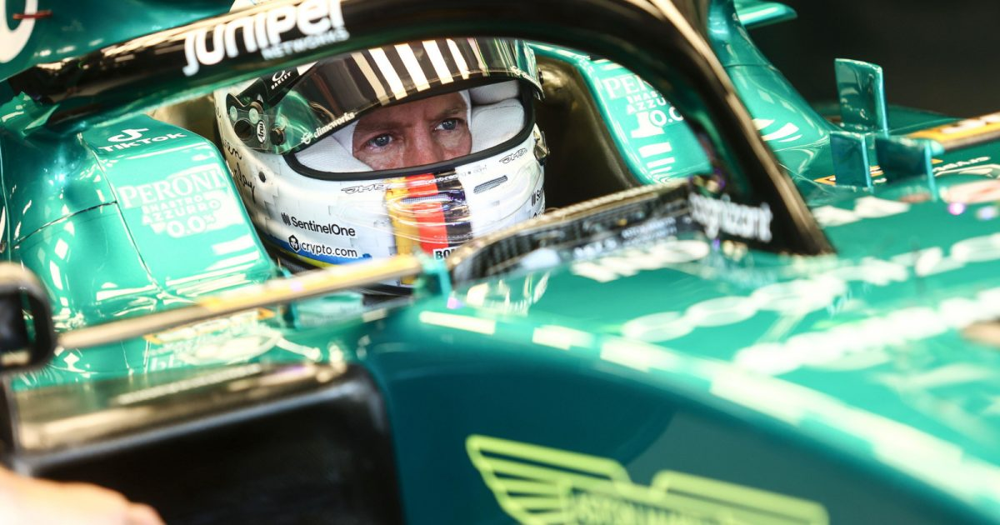

Who is Sebastian Vettel?
Sebastian Vettel is a German racing driver who competes in Formula One for Aston Martin, having previously driven for BMW Sauber, Toro Rosso, Red Bull, and Ferrari. Vettel is one of the most successful drivers in Formula One history and has won four World Drivers' Championship titles, which he won consecutively from 2010 to 2013. Vettel is the youngest World Champion in Formula One; he also has the third-most race victories (53) and podium finishes (122), and fourth-most pole positions (57).
Vettel started his Formula One career as a test driver for BMW Sauber in 2006, making a one-off racing appearance in 2007. As part of the Red Bull Junior Team, Vettel appeared for Toro Rosso later that year and was kept as a full-time driver for 2008. Vettel was promoted to Red Bull in 2009. With Red Bull, Vettel won four consecutive titles from 2010 to 2013, the first of which made him the sport's youngest World Champion, setting the records for the most consecutive race wins (9) and race wins in a single season (13). Vettel signed for Ferrari for 2015 and became Mercedes' and Lewis Hamilton's closest challenger in two title fights in 2017 and 2018, although he finished both years as runner-up. He left Ferrari to race with Aston Martin for the 2021 and 2022 seasons, before announcing his plans to retire from Formula One at the end of the 2022 season.